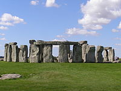

The United Kingdom of Great Britain and Northern Ireland

History
Before 1707
 Settlement by anatomically modern humans of what was to become the United Kingdom occurred in waves beginning by about 30,000 years ago. By the end of the region's prehistoric period, the population is thought to have belonged, in the main, to a culture termed Insular Celtic, comprising Brythonic Britain and Gaelic Ireland. The Roman conquest, beginning in 43 AD, and the 400-year rule of southern Britain, was followed by an invasion by Germanic Anglo-Saxon settlers, reducing the Brythonic area mainly to what was to become Wales. Most of the region settled by the Anglo-Saxons became unified as the Kingdom of England in the 10th century. Meanwhile, Gaelic-speakers in North West Britain (with connections to the north-east of Ireland and traditionally supposed to have migrated from there in the 5th century) united with the Picts to create the Kingdom of Scotland in the 9th century.
In 1066, the Normans invaded England and after its conquest, seized large parts of Wales, conquered much of Ireland and settled in Scotland bringing to each country feudalism on the Northern French model and Norman-French culture. The Norman elites greatly influenced, but eventually assimilated with, each of the local cultures. Subsequent medieval English kings completed the conquest of Wales and made an ultimately unsuccessful attempt to annex Scotland. Thereafter, Scotland maintained its independence, albeit in near-constant conflict with England. The English monarchs, through inheritance of substantial territories in France and claims to the French crown, were also heavily involved in conflicts in France, most notably the Hundred Years War.
The early modern period saw religious conflict resulting from the Reformation and the introduction of Protestant state churches in each country. Wales was fully incorporated into the Kingdom of England, and Ireland was constituted as a kingdom in personal union with the English crown. In what was to become Northern Ireland, the lands of the independent Catholic Gaelic nobility were confiscated and given to Protestant settlers from England and Scotland. In 1603, the kingdoms of England, Scotland and Ireland were united in a personal union when James VI, King of Scots, inherited the crowns of England and Ireland and moved his court from Edinburgh to London; each country nevertheless remained a separate political entity and retained its separate political institutions. In the mid-17th century, all three kingdoms were involved in a series of connected wars (including the English Civil War) which led to the temporary overthrow of the monarchy and the establishment of the short-lived unitary republic of the Commonwealth of England, Scotland and Ireland. Although the monarchy was restored, it ensured (with the Glorious Revolution of 1688) that, unlike much of the rest of Europe, royal absolutism would not prevail. The British constitution would develop on the basis of constitutional monarchy and the parliamentary system. During this period, particularly in England, the development of naval power (and the interest in voyages of discovery) led to the acquisition and settlement of overseas colonies, particularly in North America.
Since the Acts of Union of 1707
On 1 May 1707 the kingdom of Great Britain was created by the Acts of Union which joined together of the kingdoms of England and Scotland. In the 18th century, cabinet government developed under Robert Walpole, in practice the first prime minister (1721-1742). A series of Jacobite Rebellions sought to remove the House of Hanover from the British throne and restore the House of Stuart. They were finally defeated at the Battle of Culloden in 1746, after which the Scottish Highlanders were brutally suppressed. The British colonies in North America that broke away from Britain in the American War of Independence became the USA. British imperial ambition turned elsewhere, particularly to India. During the 18th century, Britain was involved in the Atlantic slave trade. Britain transported an estimated 2 million slaves from Africa to the West Indies before banning the trade in 1807. The term 'United Kingdom' became official in 1801 when the parliaments of Britain and Ireland each passed an Act of Union, uniting the two kingdoms and creating the United Kingdom of Great Britain and Ireland.
In the early 19th century, the British-led Industrial Revolution began to transform the country. It slowly led to a shift in political power away from the old landowning Tory elites to the new industrialists. The alliance of merchants and industrialists with the Whigs would lead to a new party, the Liberal Party (UK), with an ideology of free trade and laissez-faire. In 1832 they passed the Great Reform Act which began the transfer of political power from the aristocracy to the middle classes. In the countryside, enclosure of the land was driving small farmers out. Towns and cities began to swell with a new urban working class. Ordinary workers had no vote and created their own organisations in the form of trade unions. The Chartists campaigned for political reform without success.
 After the defeat of France in the Revolutionary and Napoleonic Wars (1792–1815), the UK emerged as the principal naval and imperial power of the 19th century (with London the largest city in the world from about 1830). Unchallenged at sea, British dominance was later described as Pax Britannica. By the time of the Great Exhibition of 1851, Britain was described as the "workshop of the world". The British Empire was expanded to include India, large parts of Africa, and many other territories throughout the world. Alongside the formal control it exerted over its own colonies, Britain's dominant position in world trade meant that it effectively controlled the economies of many countries, such as China, Argentina and Siam. Domestically, there was an increasing shift to free trade and laissez-faire policies and a gradual widening of the voting franchise. The country experienced a huge population increase during the century, accompanied by rapid urbanisation, causing significant social and economic stresses. After 1875, the UK's industrial monopoly was challenged by Germany and the USA. To seek new markets and sources of raw materials, the Conservative Party (UK) under Disraeli launched a period of imperialist expansion in Egypt, South Africa and elsewhere. Canada, Australia and New Zealand became self-governing dominions.
After the defeat of France in the Revolutionary and Napoleonic Wars (1792–1815), the UK emerged as the principal naval and imperial power of the 19th century (with London the largest city in the world from about 1830). Unchallenged at sea, British dominance was later described as Pax Britannica. By the time of the Great Exhibition of 1851, Britain was described as the "workshop of the world". The British Empire was expanded to include India, large parts of Africa, and many other territories throughout the world. Alongside the formal control it exerted over its own colonies, Britain's dominant position in world trade meant that it effectively controlled the economies of many countries, such as China, Argentina and Siam. Domestically, there was an increasing shift to free trade and laissez-faire policies and a gradual widening of the voting franchise. The country experienced a huge population increase during the century, accompanied by rapid urbanisation, causing significant social and economic stresses. After 1875, the UK's industrial monopoly was challenged by Germany and the USA. To seek new markets and sources of raw materials, the Conservative Party (UK) under Disraeli launched a period of imperialist expansion in Egypt, South Africa and elsewhere. Canada, Australia and New Zealand became self-governing dominions.
Social reform and home rule for Ireland were important domestic issues after 1900. The Labour Party (UK) emerged from an alliance of trade unions and small Socialist groups in 1900 and suffragettes campaigned for women's right to vote before 1914.
The UK fought with France, Russia and (after 1917) the US, against Germany and its allies in the First World War (1914–18). The UK armed forces were engaged across much of the British Empire and in several regions of Europe, particularly on the Western front. After the war, the UK received the League of Nations mandate over a number of former German and Ottoman colonies, and the British Empire had reached its greatest extent, covering a fifth of the world's land surface and a quarter of its population. However, the UK had suffered some two and a half million casualties and finished the war with a huge national debt. The rise of Irish Nationalism and disputes within Ireland over the terms of Irish Home Rule led eventually to the partition of the island in 1921, and the Irish Free State became independent with Dominion status in 1922. Northern Ireland remained part of the United Kingdom. A wave of strikes in the mid-1920s culminated in the UK General Strike of 1926. The UK had still not recovered from the effects of the war when the Great Depression (1929–32) occurred. This led to considerable unemployment and hardship in the old industrial areas as well as political and social unrest in the 1930s. A coalition government was formed in 1931.
The UK entered World War II by declaring war on Germany in 1939. In 1940, Winston Churchill became prime minister and head of a coalition government. Despite the defeat of its European allies in the first year of the war, the UK continued the fight alone against Germany. In 1940, the RAF defeated the German Luftwaffe in a struggle for control of the skies in the Battle of Britain. The UK nevertheless sustained heavy bombing during the Blitz. There were also eventual hard-fought victories in the Battle of the Atlantic, the North Africa campaign and Burma campaign. UK forces played an important role in the Normandy landings of 1944. After Germany's defeat, the UK was one of the Big Three powers that met to plan the post-war world and was an original signatory to the Declaration of the United Nations. The UK became one of the five permanent members of the United Nations Security Council. However, the war left the UK severely weakened and depending financially on Marshall Aid and loans from the United States.
In the immediate post-war years, the Labour government initiated a radical programme of reforms, which had a significant impact on British society in the following decades. Major industries and public utilities were nationalised, a Welfare State was established, and a comprehensive publicly funded healthcare system, the National Health Service, was created. The rise of nationalism in the colonies coincided with Britain's now much-diminished economic position, so that a policy of decolonisation was unavoidable. Independence was granted to India and Pakistan in 1947. Over the next three decades, most colonies of the British Empire gained their independence. Many became members of the Commonwealth of Nations.
Although the UK was the third country to develop a nuclear weapons arsenal (with its first atomic bomb test in 1952), the new post-war limits of Britain's international role were illustrated by the Suez Crisis of 1956. The international spread of the English language ensured the continuing international influence of its literature and culture, while from the 1960s its popular culture was also influential abroad. As a result of a shortage of workers in the 1950s, the UK government encouraged immigration from Commonwealth countries. In the following decades, the UK became a multi-ethnic society. Despite rising living standards in the late 1950s and 1960s, the UK's economic performance was not as successful as many of its competitors, such as West Germany and Japan. In 1973, the UK joined the European Economic Community (EEC), and when the EEC became the European Union (EU) in 1992, it was one of the 12 founding members.
From the late 1960s Northern Ireland suffered communal and paramilitary violence (sometimes affecting other parts of the UK) conventionally known as the Troubles. It is usually considered to have ended with the Belfast "Good Friday" Agreement of 1998.
Following a period of widespread economic slowdown and industrial strife in the 1970s, the Conservative Government of the 1980s initiated a radical policy of monetarism, deregulation, particularly of the financial sector (for example, Big Bang in 1986) and labour markets, the sale of state-owned companies (privatisation), and the withdrawal of subsidies to others. This resulted in high unemployment and social unrest, but ultimately also economic growth, particularly in the services sector. From 1984, the economy was helped by the inflow of substantial North Sea oil revenues.
Around the end of the 20th century there were major changes to the governance of the UK with the establishment of devolved national administrations for Scotland, Wales and Northern Ireland. The statutory incorporation followed acceptance of the European Convention on Human Rights. The UK is still a key global player diplomatically and militarily. It plays leading roles in the EU, UN and NATO. However, controversy surrounds some of Britain's overseas military deployments, particularly in Afghanistan and Iraq.
In 2013, the UK is striving to recover from a slump that followed the 2008 global financial crisis. A coalition government has introduced austerity measures which aim to tackle a large budget deficit.